@myceliumai.co
18 SEP
Viernes 18 de septiembre
7:00 p.m.
Parroquia de la
Virgen Peregrina
.
Misa por las víctimas a las 6:00 p.m. El premio se reclama desde cualquier país, el curso es 100% en línea.
Info →
@schoenstatt_cali

×
